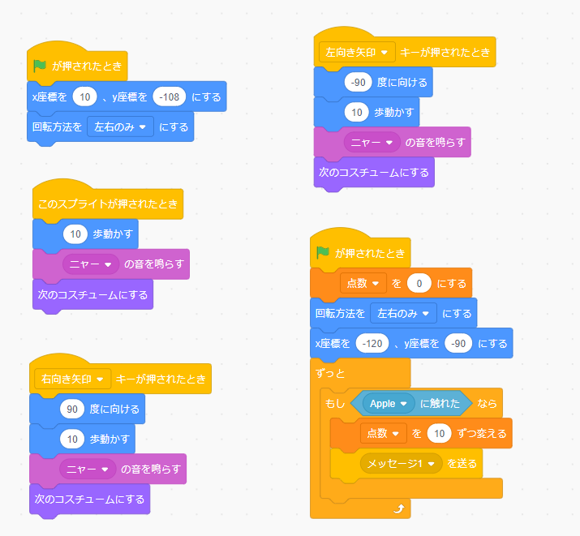

1-2 ゲーム

1.内容
りんごがランダムな場所、速さで落ちてきてそれにねこが触れるとりんごがなくなるプログラムを作成した。このプログラムは猫側とりんご側に分かれており、猫側はキーボードにある右向き矢印がおされたら右に進み、左向き矢印が押されたら左に進む。そのときニャーと音が鳴り、1歩進むごとに猫の見た目が変化する。そしてりんごに触れたらメッセージ1をりんごに送信するようになっている。りんご側は乱数ブロックを使用し、下に行く速度とそれのx座標がどこなのかをランダムにしてメッセージ1を受けると表示を消すようになっている。
2.感想
猫とりんごで全く違うプログラムを組まなければいけなかったのでややこしかった。メッセージが送られてきて表示を消すとそのあとりんごがずっと現れなくなってしまい、そこで表示するブロックを前に付け足すと出来たためこんなに少しの違いで正しいプログラムにならないと実感した。